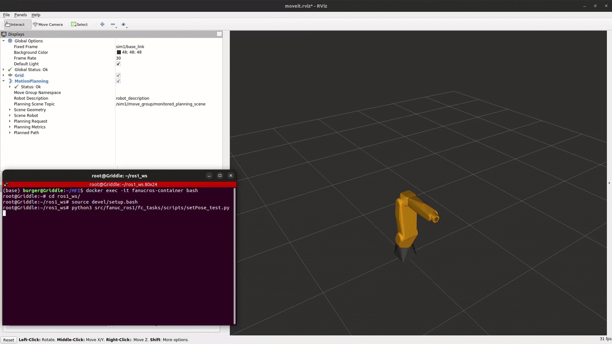
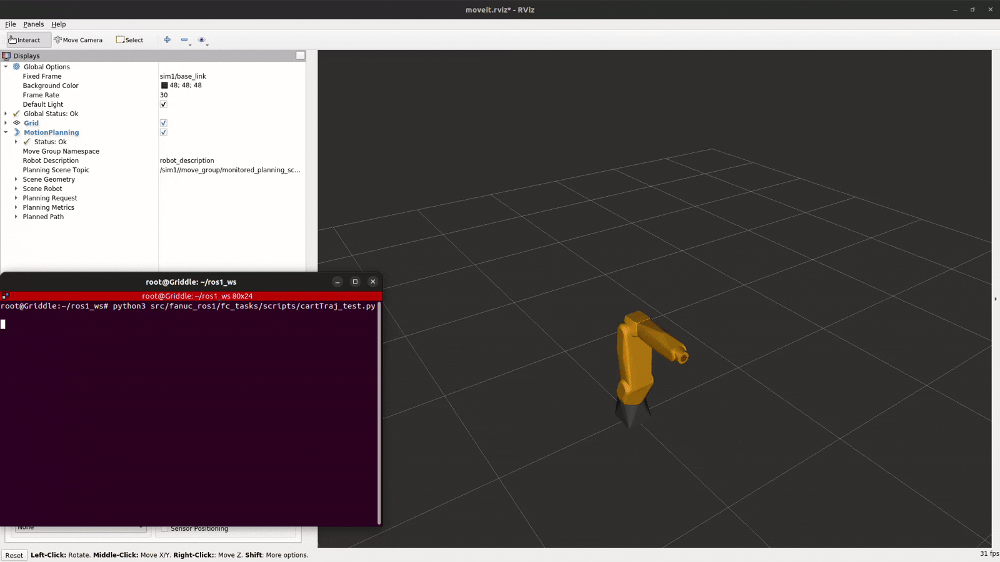

Tutorial 1 - Testing functionalities and using scripts to test actions and services
Testing Functionalities
Use the fanuc tutorials to ensure that connection with the robot is established and the required drivers are running.
Ensure the moveit_config works standalone, before testing fc_launch. Use the following commands:
roslaunch fanuc_lrmate200id7l_moveit_config moveit_planning_execution.launch sim:=true
roslaunch fanuc_lrmate200id7l_moveit_config moveit_planning_execution.launch sim:=false robot_ip:=<robot_ip>
Check fc_tasks runs in simulation by keeping sim:=true with no namespace.
roslaunch fc_launch moveit.launch sim:=true namespace:=''
Test with a namespace.
roslaunch fc_launch moveit.launch sim:=true namespace:='sim1'
Test on a real robot.
Warning
Ensure the robot is in a safe state and the environment is clear of obstacles before executing commands on a real robot.
Keep e-stop button ready to stop the robot in case of any unexpected behavior.
roslaunch fc_launch moveit.launch sim:=false namespace:='real'
Check ‘plan and execute’ works in RViz by setting a ‘random valid’ goal.
Check all ROS services and actions work. An example is shown below:
rosservice call /sim1/fc_get_pose sim1/base_link
Note
This tutorial can be adapted to non-Fanuc robot arms. However, problems may occur due to version difference of support and moveit configs. It is recommended to use this interface repository as a reference and build the new package from the beginning.
This repository comes with example scripts to test actions and services in ‘fc_tasks/scripts’. These are outlined below :
SetPose Service Test
The setPose_test.py script contains an example pose to test the /fc_set_pose service. Modify this as required to test. It’s a good idea to execute the same pose multiple times to ensure that all frames are calibrated correctly.
python3 ~/ros1_ws/src/fc_tasks/scripts/setPose_test.py

ExecuteCartesianTrajectory Service Test
The cartTraj_test.py script contains a trajectory with 2 waypoints to test the /fc_execute_cartesian_trajectory service. Modify this as required to test.
python3 ~/ros1_ws/src/fc_tasks/scripts/cartTraj_test.py

GoToPose Action Test
The goToPoseAction_test.py script contains an example pose to test the /fc_go_to_pose action server.
python3 ~/ros1_ws/src/fc_tasks/scripts/goToPoseAction_test.py
Same output as SetPose Service Test.
ExecuteCartesianTrajectory Action Test
The execTrajAction_test.py contains a trajectory with 2 waypoints to test the /fc_execute_cartesian_trajectory_action action server.
python3 ~/ros1_ws/src/fc_tasks/scripts/execTrajAction_test.py
Same output as ExecuteCartesianTrajectory Service Test.
Tutorial 2 - Configuring the Interface for another Fanuc Robot Arm
fanuc_ros1 can be used for any FANUC robot arm with a R-30iB+ controller. This tutorial explains how to configure the interface for a different FANUC robot arm, such as the LR Mate 200iD/7L.
Note
This tutorial assumes that the new package is built in a docker container with the same image as fanuc_ros1. If using a different environment, all dependencies must be satisfied manually as Noetic is now EOL. Follow installations
Making changes
Find the required support package and moveit config for the robot arm at fanuc. If a support package is not available, follow the steps at the end of this tutorial to create a new support package.
Change the package.xml dependencies of fc_tasks and fc_launch to match the new moveit config package (fanuc_lrmate200id7l_moveit_config).
Use the urdf file from the downloaded support package to find DH parameters of the new robot arm. Update the .json file in ‘/fc_tasks/config’ with the new values.
In ‘fc_launch/launch/moveit.launch’, change the ‘fanuc_lrmate200id7l_moveit_config’ to the new moveit config package and update the ‘robot_ip’.
Inside the moveit_config package, add the namespaced controllers to the ‘config/controllers.yaml’ file. Refer ‘fanuc_lrmate200id7l_moveit_config’.
Go through the moveit_config launch and config files to see if any file are missing/have different structures due to software updates.
Note
Most common differences are found in ‘move_group.launch’, ‘moveit_planning_execution.launch’ and ‘trajectory_execution.launch.xml’. Check all namespaces match this repository
Testing changes
Use the testing steps described in Tutorial1 to test all interface functionalities.
Steps to create a support package for ROS-I
Obtain CAD files - should be part wise and not one whole assembly
Assemble the CAD in solidworks using coincident and concentric mates for revolute joints. The joint should be able to be moved in the assembly.
Get the SolidWorks to URDF plugin and launch it. Follow the instructions and name the links and the joints.
Generate the full urdf package to get all visual meshes.
Follow a general robot support package structure - (Use
as reference) and create robot_specific files
To generate collision meshes, use
. Reduce the number of faces to 500 using Filters → Remeshing, Simplification and Reconstruction → Quadric Edge Collapse Decimation. Save as .stl
Create .xacro files using the urdf. Simple tutorials online and GenAI does an easy enough conversion.
Have a _macro.xacro file that calls the .xacro file.
Test the support package using the launch files created.
Create a MoveIt config -